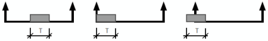

Für die tragenden Teile eines hochziehbaren Personenaufnahmemittels einschließlich Aufhängung sind allgemeine Spannungsnachweise und gegebenenfalls Stabilitätsnachweise zu führen. Das Eigengewicht ist aus der betriebsmäßigen Anordnung der Konstruktionsteile zu ermitteln. Die Nutzlast ist an der jeweils ungünstigsten Stelle anzusetzen.

Beispiele zur Anordnung der Nutzlast
3.1 Bemessung des Personenaufnahmemittels
Unter den betriebsmäßig auftretenden Beanspruchungen dürfen die den Normen "Stahlbauten" beziehungsweise "Aluminiumkonstruktionen" zu entnehmenden zulässigen Spannungen nicht überschritten werden.
Unter den Voraussetzungen,
dürfen tragende und nichttragende Teile des Personenaufnahmemittels bleibende Verformungen erleiden, aber nicht zu Bruch gehen.
Abhängig von der jeweiligen Konstruktion, tritt während des Fangens kurzfristig ein Mehrfaches der ruhenden Belastung auf; das Verhältnis der mehrfachen zur ruhenden Belastung wird als Stoßfaktor ψ bezeichnet. Es ist nachzuweisen, dass während des Wirkens der Fangkraft K an tragenden Teilen die Fließgrenze nicht erreicht wird.
K1 und K2 sind konstruktionsabhängige Verteilungsfaktoren für das Eigengewicht E und für die Nutzlast Q.
Unter den Voraussetzungen,
dürfen
Der Boden des Personenaufnahmemittels muss an jeder Stelle eine Last von 1,0 kN – gleichmäßig verteilt auf einer Fläche von 20 cm x 20 cm – ohne bleibende Verformung aufnehmen können.
Unter den betriebsmäßig auftretenden Beanspruchungen dürfen die den Normen "Stahlbauten" beziehungsweise "Aluminiumkonstruktionen" zu entnehmenden zulässigen Spannungen nicht überschritten werden.
Tragende Teile der Aufhängung dürfen keine bleibenden Verformungen erleiden, wenn das Personenaufnahmemittel an ungünstigster Stelle verhakt und von den Winden die Höchstzugkraft beziehungsweise die begrenzte Zugkraft in den Tragmitteln erzeugt wird.
Abhängig von der jeweiligen Konstruktion, tritt während des Fangens kurzfristig ein Mehrfaches der ruhenden Belastung auf; das Verhältnis der mehrfachen zur ruhenden Belastung wird als Stoßfaktor ψ bezeichnet. Es ist nachzuweisen, dass während des Wirkens der Fangkraft K an tragenden Teilen die Fließgrenze nicht erreicht wird.
K1 und K2 sind konstruktionsabhängige Verteilungsfaktoren für das Eigengewicht E und für die Nutzlast Q.